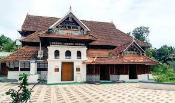
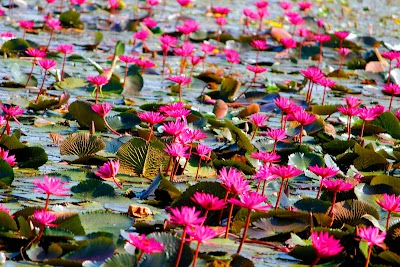

Ettumanoor Mahadeva temple

Ettumanoor Mahadeva temple is an ancient Shiva temple in Kottayam, Kerala, India. Temple tradition has it that the Pandavas and the sage Vyasa had worshipped at this temple. The name of the place has its origin from the word manoor, which means "the land of deer."
Kottayam Cheriapally

St. Mary’s Orthodox Syrian Church, Kottayam, commonly known as Kottayam Cheriapally, is a Malankara Orthodox Syrian Church located in Kottayam, Kerala, India. Cheriapally meaning ‘small church’, whose appearance contradicts its name, is one of the oldest and well-preserved churches in the state.
Thazhathangady Juma Masjid
Thazhathangady Juma Masjid is a mosque situated in Thazhathangady, one of the Heritage Zones of Kerala, India, near the town of Kottayam. It is one of the oldest mosques in India and is more than 1000 years old. It is famous for its richness of architecture, wood carvings and the beauty.
Malarikkal Sunset View Point
Malarikkal Sunset View Point (Tourist attraction) is located in Kottayam, Kerala, India. Address of Malarikkal Sunset View Point is Thiruvarpu, Kerala 686003, India.Bright pink water lilies can be seen in October from this lookout over a river & rice fields.